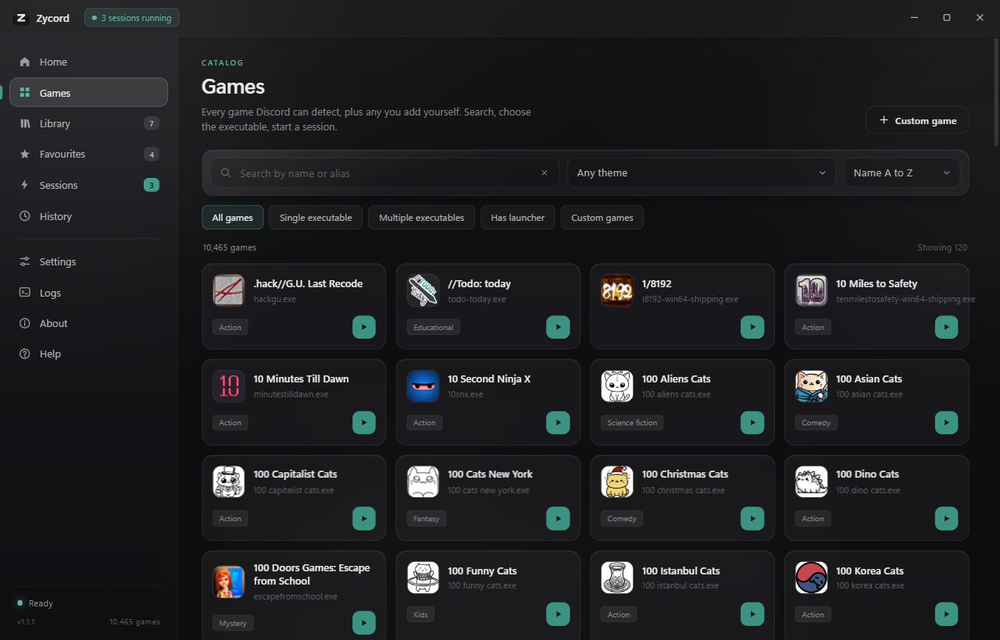
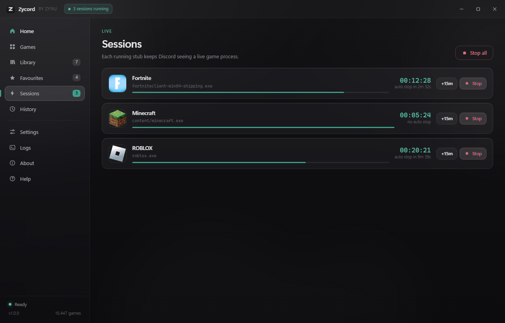
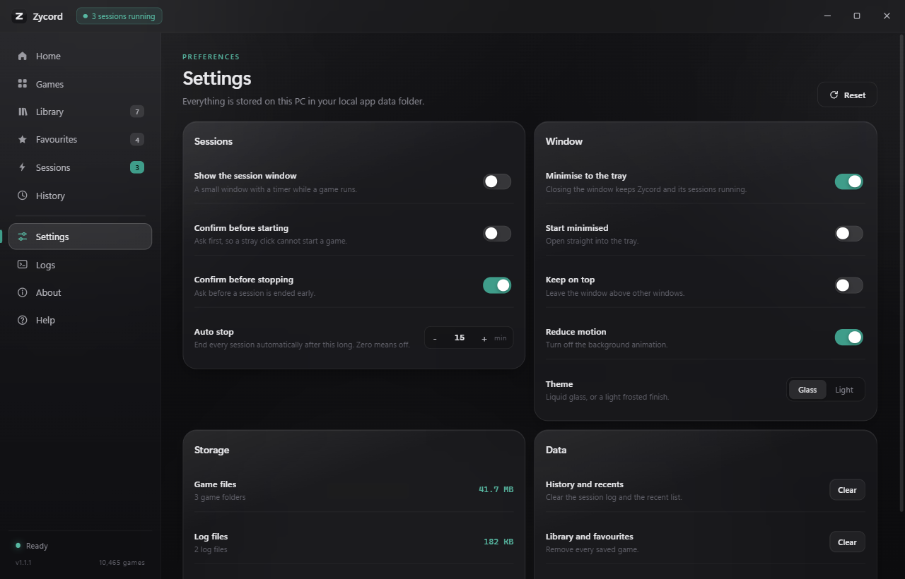

Screenshots
The launcher as it looks in version 1.1.3
Captures of the three sections you will use most: browsing the catalog, watching sessions, and changing settings. The window is shown at 1280 by 820.



What the captures show
Games
A local catalog
The grid is rendered from the catalog file shipped with the application. No server is queried to fill it.
Sessions
One stub per game
Each row is a session Zycord started. Before stopping anything it confirms the process still points at the file it created.
Settings
Stored on this PC
Every switch writes to the settings file in your local app data folder. Nothing is synced anywhere.